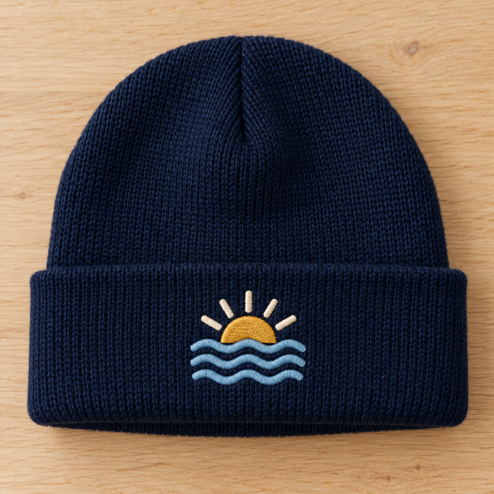

17aApprovata
Cappellini ricamati (USA + Europa)
Cappellino ricamato: sole sul mare
Berretto in maglia con risvolto, ricamato (Yupoong, Printful: spedisce USA + Europa)
Colori: Red, Navy, Black, Olive
Simbolo minimal senza scritte, si vende tutto l'anno; richiama il mare di Polignano del marchio.